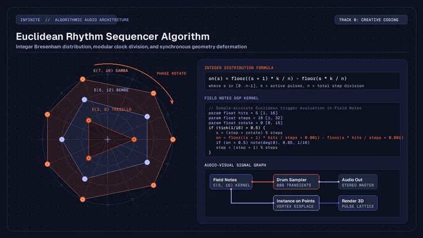
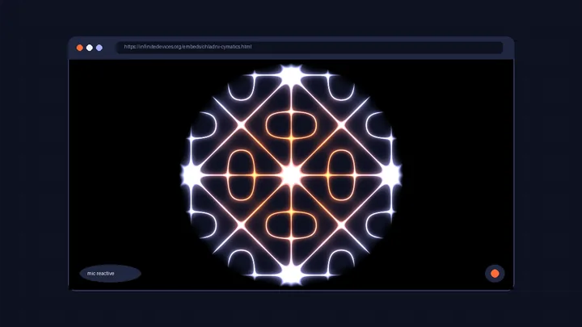
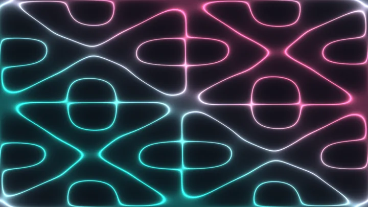
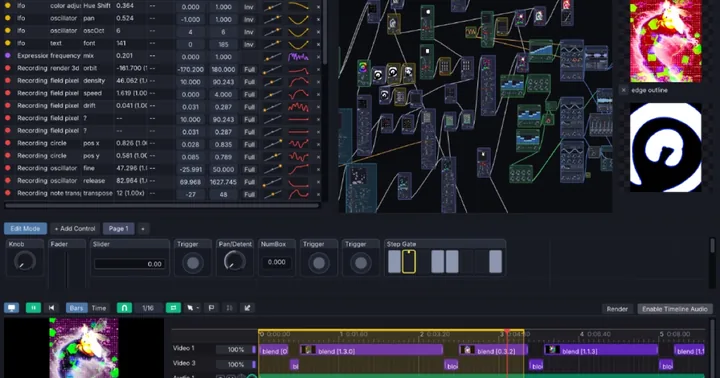
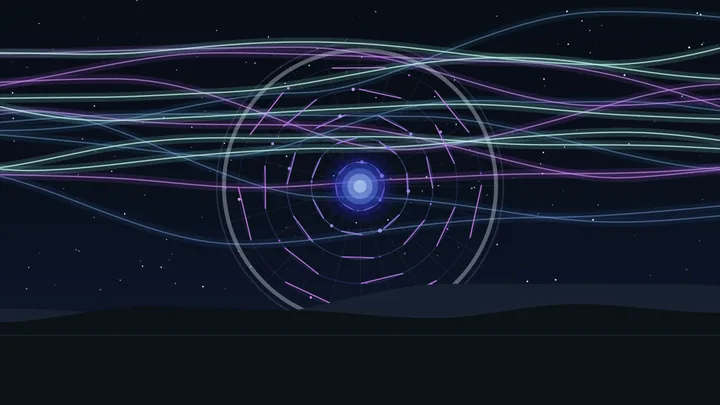
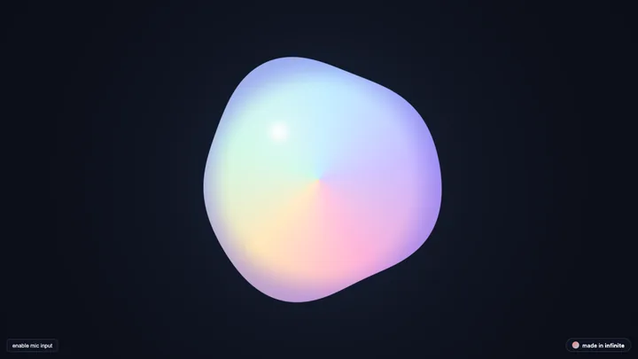
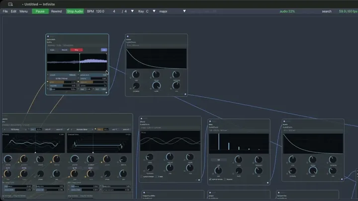

Euclidean rhythm sequencer algorithms for modular music
How to generate Euclidean rhythm sequencer algorithms using Bjorklund integer distribution, modular arithmetic, and audio-reactive triggers in Infinite.
How Infinite is built, and what you can make with it. Flip through the book of notes, reshuffled on every visit.

How to generate Euclidean rhythm sequencer algorithms using Bjorklund integer distribution, modular arithmetic, and audio-reactive triggers in Infinite.

How to embed responsive, microphone-reactive 3D WebGL visualisers into portfolios, documentation, and blogs using self-contained HTML iframes.

explore infinite original nodes: convert images to sound with wave terrain, ring 3d geometry with shape resonator, and simulate chladni cymatics.

Connect AI coding agents to Infinite via MCP and Python SDK for headless audio synthesis, 3D meshes, and video rendering.

Infinite headless engine lets AI agents write text patches, inspect signals, and render music, pictures and 3D from the command line.

why infinite's audio engine is written in modern c++ without a framework, and what that changes for real-time safety.

Guide to modular sound design in Infinite DAW: subtractive sub bass, Karplus-Strong plucks, and ambient pads with Field kernels.

Connect hardware synthesizers, MIDI controllers, and DMX lighting to Infinite with low latency routing and parameter modulation.

how sketch nodes let you draw with javascript in infinite and expose real modulation pins to synths and audio signals.

Breakdown of Infinite register machine for Field Synth and Effect nodes, compiling per-sample audio DSP kernels at 48kHz.

Build procedural 3D meshes in Infinite DAW, deform topology with Field modifier kernels, and drive real-time geometric mutations.

How to convert any Shadertoy fragment shader into a native real-time node in Infinite, hook it up to audio analysis FFT bands, and export high-resolution video.
Field is the language built into Infinite. One kernel can become a shader, a geometry deformer or an audio effect, depending on the node it lives in.

An honest look at where Infinite fits next to TouchDesigner for audio-reactive visuals and VJ work, and where TouchDesigner is still the better choice.
Infinite benchmarks on a base MacBook Air M2 against Blender, Vital, Serum 2 and popular DAWs, with the results published, including where Infinite is slower.

A beginner walkthrough from a free template to a shape that moves with your music, using the Audio Analyze node and a single cable.

Load a third-party plugin into Infinite and drive its parameters from an LFO, an envelope follower or something moving on screen.
Hand Track, Face Track and Pose Track turn a camera or picture into modulators, so a pinch, a smile or a raised arm can drive any parameter in your patch.
Infinite runs a pull-based audio graph and a GPU texture pipeline off one BPM transport, so audio can drive visuals and visuals can drive audio.
Infinite's headless mode turns a plain-text patch into stills, video and a loudness report from the command line. Here is the five-minute workflow.
Drag, swipe, scroll or press ← → to flip · reshuffled every visit
No posts in this group yet.